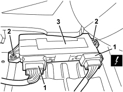
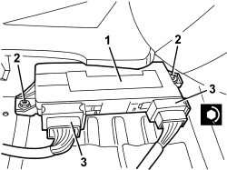

5505A48 CONTROL UNIT (DIGITAL NETWORK NODE) IN BOOT COMPARTMENT - R.R.
- Path
- Procedures > 55 ELECTRICAL EQUIPMENT > 5505 INSTRUMENT/GAUGE ELECTRICAL CIRCUITS > 5505A MULTI-FUNCTION COMPONENTS > 5505A48 CONTROL UNIT (DIGITAL NETWORK NODE) IN BOOT COMPARTMENT - R.R.
- Kind
- repair procedure (removal / refitting; the operation number is the code)
- Applies to
- all engines; all production periods
- Interactive page
- https://sloeber94.github.io/elrnDB/#/939010971
Applies to: all engines; all production periods
 Removing
Removing
 Refitting
RefittingOp. 7050A20 ONE-PIECE REAR SEAT CUSHION - R.R.
1. Disconnect the electrical connections (1a and 1b).
Description | Component |
|---|---|
LUGGAGE COMPARTMENT CONTROL UNIT (NVB) |
2. Undo the nuts.
3. Remove the control unit.

Applies to: all engines; all production periods
Refitting
Removing- Check that the control unit is not damaged.
2. Tighten the nuts.
Component | Fastening | dia | Value (daNm) | Validity |
|---|---|---|---|---|
LUGGAGE COMPARTMENT JUNCTION UNIT NODE | Nut | M6 | 0.7 ÷ 1.1 |
3. Connect the electrical connections.

Applies to: all engines; all production periods
Topics linked from this page (2)
Topics that link to this page (10)
- E1050 CAN CONNECTION LINES - WIRING DIAGRAM
- E1050 CAN CONNECTION LINES - COMPONENT LOCATION
- E2535 CONTROLS LIGHTING - WIRING DIAGRAM
- E2535 CONTROLS LIGHTING - COMPONENT LOCATION
- E3040 CENTRAL LOCKING - WIRING DIAGRAM
- E3040 CENTRAL LOCKING - COMPONENT LOCATION
- E3040 CENTRAL LOCKING - WIRING DIAGRAM
- E3040 CENTRAL LOCKING - COMPONENT LOCATION
- E3051 ELECTRIC REAR WINDOWS - WIRING DIAGRAM
- E3051 REAR ELECTRIC WINDOWS - COMPONENT LOCATION